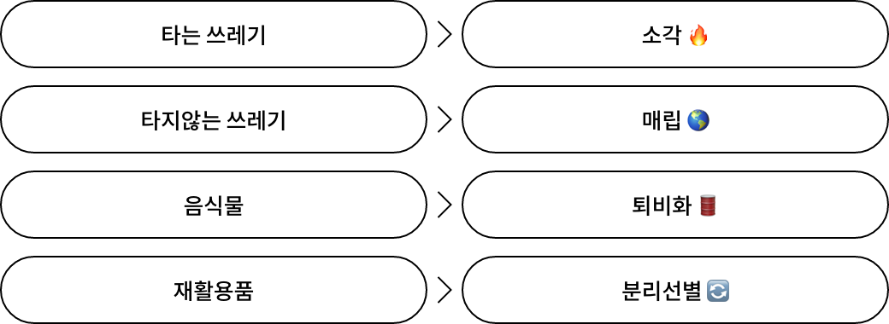

분리수거
쓰레기를 배출하기 전에 쓰레기가 어떻게 처리되는지 알아볼까요?

- 타는 쓰레기와 타지 않는 쓰레기를 나누어 배출해주세요
- 음식물 쓰레기로 동물들이 먹을 수 있는 음식물을 배출해주세요.
- 재활용품은 배출방법에 맞게 분리 후 젖지 않게 배출해주세요.
타는 쓰레기 배출방법 🔥
- 쓰레기 종량제봉투에 담아 배출해주세요.
>> 휴지, 나무조각, 목초류, 비닐, 종이기저귀, 가방, 신발 등
타지않는 쓰레기 배출방법 🌏
- 마대에 담아 배출해주세요
>> 유리류, 사기류, 도자기류, 폐화장품, PVC, 소량의 건설폐기물 등
음식물쓰레기 배출방법 🛢
- 음식물쓰레기 종량제봉투에 담아 배출해주세요.
>> 동물들이 먹을 수 있는 음식물을 배출해주세요
대형폐기물 배출방법 🚛
- 지역별 수거업체에 신청하여 배출해주세요.
>> TV, 냉장고, 세탁기, 에어컨, 대형 가전제품